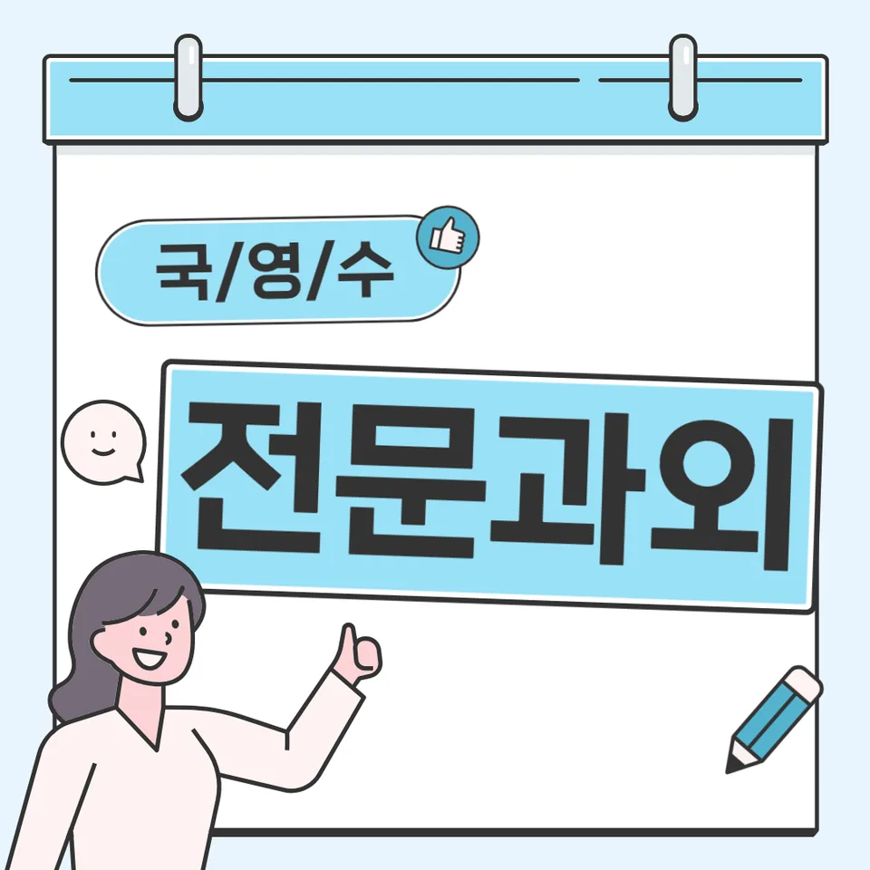

PageType : SUBJECT
URL : /경기도과외/부천시과외/소사구과외/범박동과외/범박동수학과외/
지역 교육환경이 수학 학습에 미치는 영향
범박동수학과외를 찾는 학생들은 대체로 학교 수업만으로 부족함을 느끼는 구간이 빠르게 도착합니다. 지역의 학습 분위기에서는 시험 대비가 자연스럽게 빨리 시작되는 편이라, 수학 학습도 ‘개념→문제’의 흐름이 끊기지 않도록 관리하지 않으면 학습 공백이 누적됩니다. 특히 같은 학년이라도 수업 속도에 따라 이해의 깊이가 달라져, 범박동수학과외처럼 과정을 점검해 주는 학습 환경이 필요해집니다. 학원이나 스터디가 많은 편일수록 경쟁이 심해 보여도, 학생 입장에서는 “어떤 방식으로 공부해야 하는지”를 스스로 정리할 기회가 더 중요해집니다. 범박동수학과외는 개념을 이해하는 순간을 확인하고, 그 이해가 실제 문제 상황에서 쓰이는지까지 연결해 보려는 방식으로 진행되는 경우가 많습니다.
지역 학교 주변에서는 공부 시간이 늘어나는 시기와 시험 전 부담이 겹치며, 학생들이 수학을 ‘계산 연습’으로만 인식하는 경향이 나타나기 쉽습니다. 이때 학부모는 성적 변동을 보며 불안해지지만, 실제 원인은 학습 계획의 일관성 부족에 있는 경우가 많습니다. 범박동수학과외는 가정에서의 공부습관이 무너지는 타이밍을 관찰해, 어떤 날에는 무엇을 점검해야 하는지부터 정리합니다.
학교별 평가 방식과 학습 방향
학교마다 내신에서 보는 비중과 평가 문항의 성격이 다르기 때문에, 수학 공부 방향도 달라집니다. 어떤 학교는 서술형이나 과정 중심 채점이 강조되어 문제 해결 과정의 논리 정리가 중요해지고, 다른 학교는 단원별 정확도가 더 크게 작용합니다. 이 차이를 모르고 공부하면, 학생은 문제를 풀어도 점수가 잘 오르지 않는 경험을 하게 됩니다. 범박동수학과외에서는 수행평가 준비가 시작되는 시점이나 단원 전환 시기에 맞춰, 같은 단원을 공부하더라도 내신 문항 스타일에 맞는 학습 루틴으로 바꾸는 편입니다. 특히 시험 직전 ‘양’만 늘리는 방식은 오답이 축적되는 속도를 더 빠르게 만들 수 있습니다.
평가가 바뀌면 학생이 느끼는 부담도 함께 움직입니다. 수업 중 개념 이해는 되었는데, 시험에서 요구하는 서술 형태나 풀이 흐름을 정리하지 못하면 결과가 흔들립니다. 이럴 때 범박동수학과외는 학교 수업의 흐름과 시험 범위를 연결해 공부의 우선순위를 재정렬하도록 돕습니다. 결국 내신 대비는 문제를 푸는 횟수보다, 학생이 무엇을 놓치고 있는지 드러나는 방식으로 설계되어야 합니다.
학생들이 수학을 어려워하는 주요 원인
수학 학습에서 어려움이 커지는 시기는 대개 ‘개념의 연결’이 필요한 순간입니다. 이전 단원에서 익힌 방식이 새 단원에서는 다른 맥락으로 쓰이는데, 학생은 표면적인 규칙만 붙잡고 넘어가며 헷갈려합니다. 범박동수학과외에서는 학생이 틀리는 문제를 단순히 “어려워서”로 보지 않고, 어떤 사고 단계에서 멈추는지부터 추적합니다. 예를 들어 조건을 읽는 방식이 달라지거나, 관계를 해석하는 순서가 무너지는 순간에 오답이 반복됩니다.
또 다른 원인은 복습의 부재입니다. 수학은 한번 배운 것을 시간이 지나며 자연스럽게 정착시키기 어렵고, 시간이 지난 뒤 다시 보면 같은 실수를 반복하는 경우가 흔합니다. 학부모 입장에서는 “이미 배웠는데 왜 또 틀리지?”라는 질문을 하게 되지만, 학생의 머릿속에 개념이 ‘사용 가능한 형태’로 저장되지 않았기 때문일 수 있습니다. 범박동수학과외는 오답을 분석하고 반복을 줄이는 과정이 공부의 중심이 되도록 학습 습관을 조정합니다.
학년 변화에 따른 수학 학습의 차이
학년이 올라가면 난도가 올라가는 것 이상으로, 수학 학습의 부담이 ‘시간 관리’와 ‘사고력’의 형태로 바뀝니다. 중간고사와 기말고사 사이에 쌓이는 단원이 늘어나고, 수행평가나 과정 채점 요소가 포함되면 학생은 더 많은 준비 단계를 동시에 처리해야 합니다. 이때 범박동수학과외는 학생이 공부를 늦게 시작하는 문제를 지적하기보다, 공부습관이 흔들리는 원인이 무엇인지 찾아내는 데 집중합니다. 시험 기간이 가까워질수록 수업 시간에 배운 개념을 복습하며 연결해야 하는데, 학생이 그 연결고리를 생략하면 이해는 얕아지고 속도는 더 느려집니다.
학년 전환기에 특히 중요한 것은 자신감이 형성되는 과정입니다. 처음부터 완벽히 맞히려는 태도는 부담을 키우지만, 작은 성공 경험을 반복하며 “내가 왜 틀렸는지 설명할 수 있다”는 감각이 생기면 학습 태도가 바뀝니다. 범박동수학과외는 개념을 이해하고 활용하는 학습 과정에서 학생이 스스로 점검하는 질문을 만들도록 유도합니다. 그러면서 문제 해결력이 성장하는 단계가 눈에 보이게 됩니다.
꾸준한 학습이 실력으로 이어지는 과정
수학 학습은 시험 한 번의 성과로 결정되지 않습니다. 공부가 꾸준히 이어질 때만 오답이 줄어들고, 복습이 학습 성과로 이어집니다. 범박동수학과외는 매일 많은 문제를 푸는 방식보다, “오늘의 학습이 내일의 오답을 줄이는지”를 확인하는 루틴을 강조합니다. 이 과정에서 자기주도학습이 자리 잡습니다. 학생이 무엇을 공부해야 하는지 결정하고, 스스로 이해 여부를 점검하면서 학습 흐름이 안정됩니다.
또한 시간 효율은 분량이 아니라 설계에서 생깁니다. 학습 계획을 꾸준히 유지하는 과정에서 학생은 쉬운 문제를 반복하기보다 취약 단원이나 자주 틀리는 유형에 시간을 배분하게 됩니다. 범박동수학과외는 시험 기간 학습 패턴의 변화도 함께 다룹니다. 시험 전에는 단원 단위로 다시 정리하고, 시험 이후에는 오답을 기준으로 다음 학습의 방향을 세우는 식으로 연결해 줍니다. 결과적으로 공부습관이 실력으로 굳어집니다.
문제 해결력을 키우는 학습 습관
문제 해결은 단순히 풀이를 외우는 일이 아닙니다. 학생이 조건을 해석하고, 어떤 개념을 먼저 떠올려야 하는지 순서를 세우는 경험이 쌓일 때 사고력이 성장합니다. 범박동수학과외에서는 문제 해결 과정에 집중해, 학생이 중간에 막히는 지점을 스스로 확인하도록 돕습니다. 같은 유형이라도 처음엔 헤매더라도 “어디에서 생각이 끊겼는지”를 말할 수 있게 되면 다음 문제에서 전략이 달라집니다.
오답을 분석하고 반복을 줄이는 과정도 습관으로 연결됩니다. 학생이 틀린 이유를 한 줄로 끝내지 않고, 다음에 같은 실수를 하지 않기 위한 체크 항목을 세우면 학습이 단단해집니다. 범박동수학과외는 오답이 ‘부끄러운 결과’가 아니라 ‘학습 데이터’가 되도록 분위기를 잡는 편입니다. 그 결과 학생은 문제 해결력이 성장하는 경험을 반복하게 되고, 어려운 문제도 회피하지 않게 됩니다.
복습과 학습 관리가 중요한 이유
복습은 단순한 재학습이 아니라 기억의 형태를 바꾸는 과정입니다. 처음 이해했을 때는 문제를 풀어낼 수 있어도, 시간이 지나면 같은 개념을 다른 형태로 마주했을 때 다시 막히는 학생이 많습니다. 범박동수학과외는 복습이 학습 성과로 이어지도록 주기를 조절합니다. 학생 입장에서는 “언제 다시 봐야 하는지”가 정해져 있을 때 자기주도학습이 지속되기 쉽습니다.
학습 관리가 잘되면 시험 준비도 흔들리지 않습니다. 시험 기간이 다가올수록 학생은 속도를 올리려 하지만, 그 과정에서 작은 실수가 반복되기 쉬워집니다. 그래서 범박동수학과외에서는 복습과 학습 관리가 함께 움직이도록 설계합니다. 단기 성과에만 매달리지 않고, 오답을 정리하는 방식과 다음 학습으로 넘어가는 타이밍을 잡아 줍니다. 이 흐름이 유지되면 공부습관이 안정되고, 가정과 학교에서 이어지는 학습 환경도 자연스럽게 연결됩니다.
수학 학습에서 확인해야 할 핵심 요소
범박동수학과외를 포함해 수학 학습에서 성장을 만드는 요소는 ‘무엇을 얼마나’보다 ‘어떻게 확인하는가’에 가깝습니다. 개념 이해가 실제 문항에서 작동하는지, 학생이 스스로 오답의 원인을 말할 수 있는지, 그리고 복습이 일정하게 돌아가는지 같은 핵심 요소가 갖춰져야 학습이 다음 단계로 이동합니다. 이 기준을 점검하면 학교 내신과 수행평가 준비 과정에서도 우선순위가 정리되고, 학생의 사고력이 성장하는 방향이 분명해집니다.
- 학교 수업과 시험 범위에 맞는 학습 계획을 세우고 있는지 확인합니다.
- 개념을 암기하는 데 그치지 않고 문제 해결 과정에 활용하고 있는지 점검합니다.
- 틀린 문제를 다시 풀어보며 실수의 원인을 꾸준히 분석합니다.
- 단기 성과보다 지속적인 복습과 학습 습관을 유지하고 있는지 살펴봅니다.
마지막으로 학생마다 다른 성장 속도와 학습 과정이 존재한다는 점도 함께 고려해야 합니다. 어떤 학생은 개념을 잡는 속도가 빠르고, 어떤 학생은 문제 풀이 루틴을 먼저 만드는 방식으로 발전합니다. 지역 학생들에게 흔히 나타나는 특징이 있더라도, 그 차이를 덮는 방식이 아니라 학습 경험을 맞춰 가는 방식으로 접근해야 합니다. 범박동수학과외에서는 이런 차이를 관찰하며 학교와 가정에서 이어지는 학습 환경을 조율합니다.
자주 묻는 질문
수학 학습은 언제부터 체계적으로 준비하는 것이 좋을까요?
시험이 시작될 때보다, 단원 전환 직후에 학습 습관을 고정하는 것이 유리합니다. 범박동수학과외에서는 학생이 어려움을 느끼는 시기를 기준으로 준비 타이밍을 조절해 공부 계획이 흔들리지 않게 만듭니다.
학교 내신과 수행평가는 어떻게 함께 준비하면 좋을까요?
수업에서 다룬 개념을 수행평가에서 요구하는 방식으로 다시 정리해 두고, 내신은 단원 범위와 문항 성격에 맞춰 오답 중심으로 관리하는 편이 좋습니다. 학교에서 요구하는 평가 흐름을 먼저 확인하면 시행착오가 줄어듭니다.
수학 개념이 부족한 학생도 학습 흐름을 따라갈 수 있을까요?
가능합니다. 핵심은 개념을 다시 ‘처음부터’가 아니라 ‘현재 문제에서 필요한 부분’만 회복시키는 방식입니다. 범박동수학과외처럼 학생의 멈춤 지점을 찾아가면 학습 흐름이 이어집니다.
문제 해결력은 어떤 과정을 통해 향상될 수 있을까요?
조건을 읽고 사용할 개념을 정하는 단계에서 사고력을 키우는 경험이 필요합니다. 이후 오답을 분석해 실수 패턴을 줄이면 문제 해결 과정이 자동화되듯 안정됩니다.
꾸준한 학습 습관은 어떻게 만들어갈 수 있을까요?
큰 목표보다 작은 점검을 반복하는 구조가 중요합니다. 공부 계획을 꾸준히 유지하는 과정에서 복습 주기와 오답 정리 방식이 고정되면 자기주도학습이 자리 잡습니다. 범박동수학과외에서는 시험 기간 학습 패턴의 변화까지 고려해 루틴을 조정합니다.
